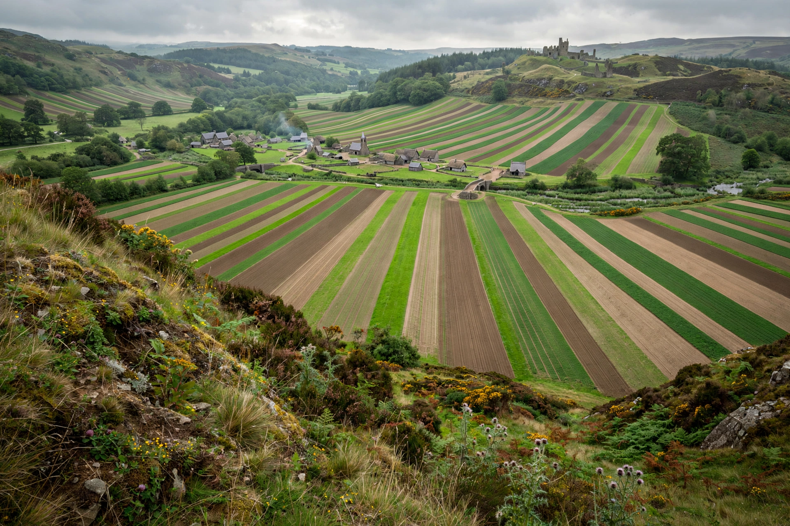

Open-field system

The open-field system was the prevalent agricultural system in much of Europe during the Middle Ages and lasted into the 20th century in parts of western Europe, Russia and Iran. Under the open-field system, each manor or village had two or three large fields, usually several hundred acres each, which were divided into many narrow strips of land. The strips or selions were cultivated by individuals or peasant families, while the fields as a whole were operated communally and regulated under a common system.
Organisation
A typical arrangement rotated crops among the fields — for example winter wheat, spring barley or oats, and a fallow field grazed in common. Individual holdings were scattered strips, so each tenant farmed land of varied quality and shared common risks. Common pasture, meadow and woodland were governed by village by-laws enforced at the manorial court. The system required cooperation over ploughing teams, sowing times and the turning of livestock onto the stubble after harvest.
Decline and enclosure
In England, piecemeal enclosure from the late Middle Ages and parliamentary enclosure from the 18th century replaced strips with compact hedged farms. Remnants survive at places such as Laxton in Nottinghamshire. Related systems included the Scottish runrig and the Russian mir. Historians debate why the system persisted for centuries, explanations ranging from risk-sharing and equity of land quality to the coordination advantages of common grazing.